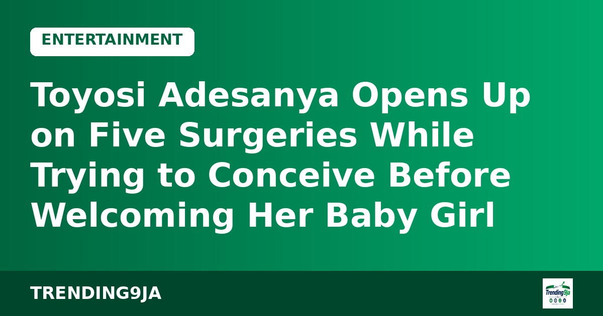

Judge Orders Trump Administration to Pull Taxpayer-Funded TV Ads Weeks Before Midterms
The campaign cost up to $20m; the administration says it was ending Sunday anyway. Also: a Newsom death-row move and Kansas Senate polling.

The US Department of Justice's Antitrust Division is examining whether a boycott by TV networks, which halted coverage of President Trump in September, violated federal antitrust law. The networks named are ABC, CBS, CNN, NBC and Fox News.
The boycott followed the White House's decision to revoke press credentials for reporters from three outlets: CNN, MS NOW and Politico. US District Judge Timothy Kelly found the ban likely unconstitutional, and the White House reinstated the credentials on 24 September. On 19 September, the White House had described news coverage of the president as a privilege, not a right.
Justice Department spokesperson Emily Covington said: "Group boycotts among commercial competitors can violate the Sherman Act," adding that the division is only trying to determine whether the outlets broke the law. Jose Zamora of the Committee to Protect Journalists said on X: "The government should not use antitrust investigations to intimidate news outlets defending press access." The networks did not immediately comment.
Sources: Al Jazeera (AP, Reuters)

The campaign cost up to $20m; the administration says it was ending Sunday anyway. Also: a Newsom death-row move and Kansas Senate polling.

Up to 3 million tonnes promised, critics call it a sanctions rollback, and some Republicans want it blocked.

An FT poll puts disapproval at 59%, and troops near a D.C. ballot drop box raise eyebrows.

Zelenskyy tells ABC "it's up to our people" to pick their leader and says elections are possible after a 60-day total ceasefire.

The actress credits Iyabo Ojo for support and describes difficulties in her former marriage.